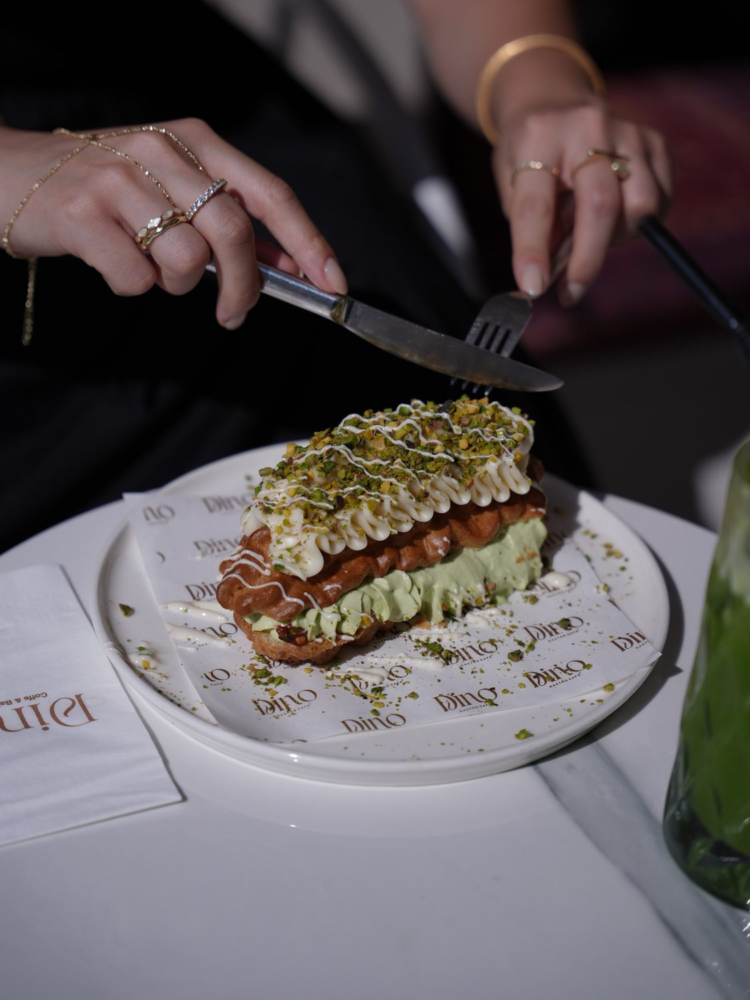
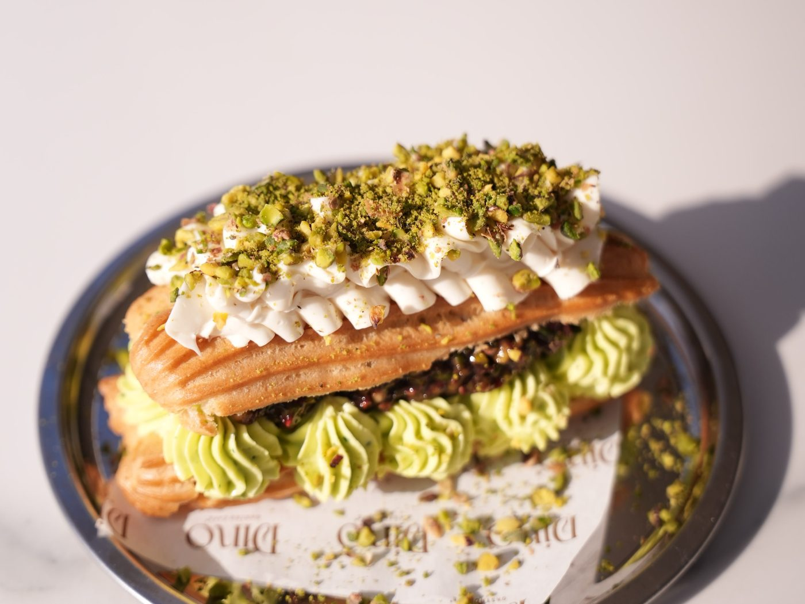
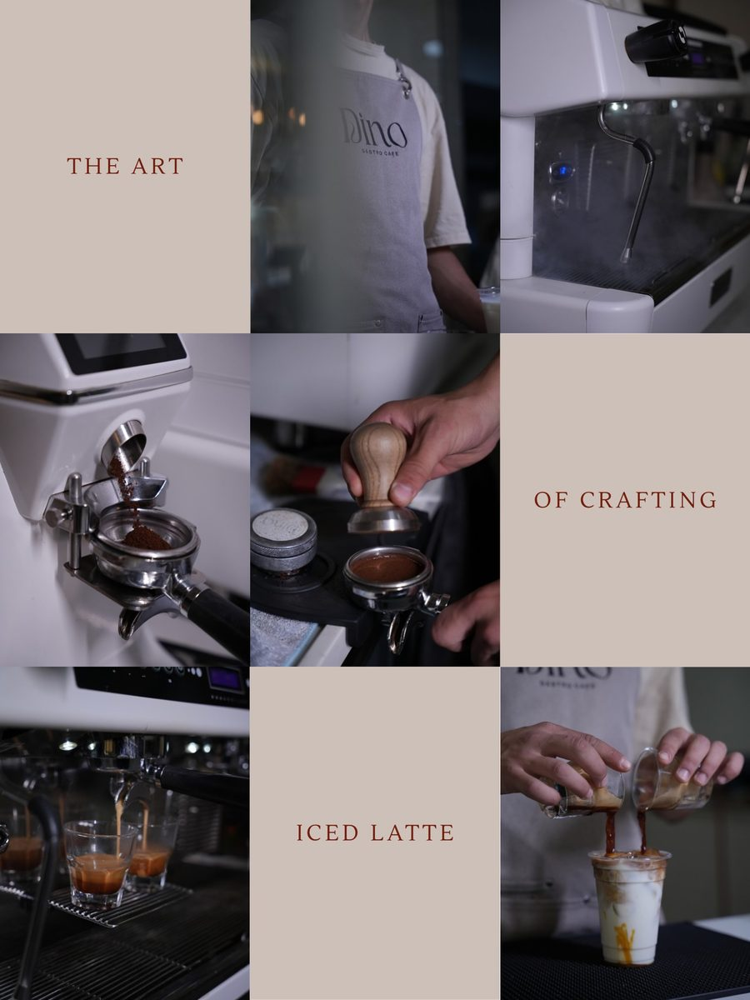
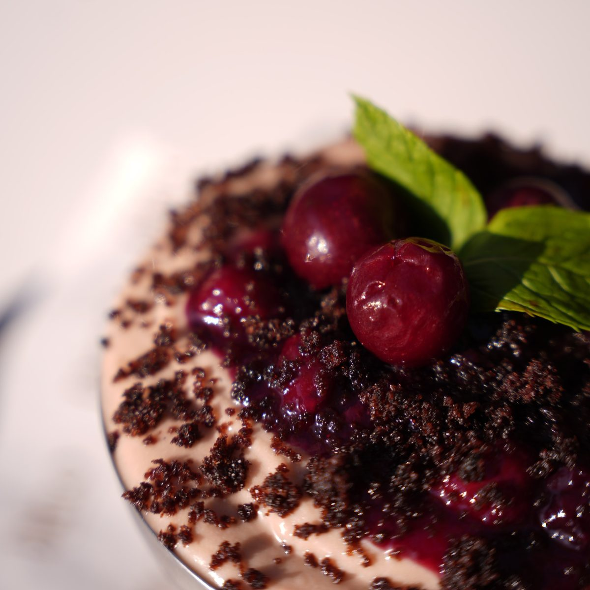
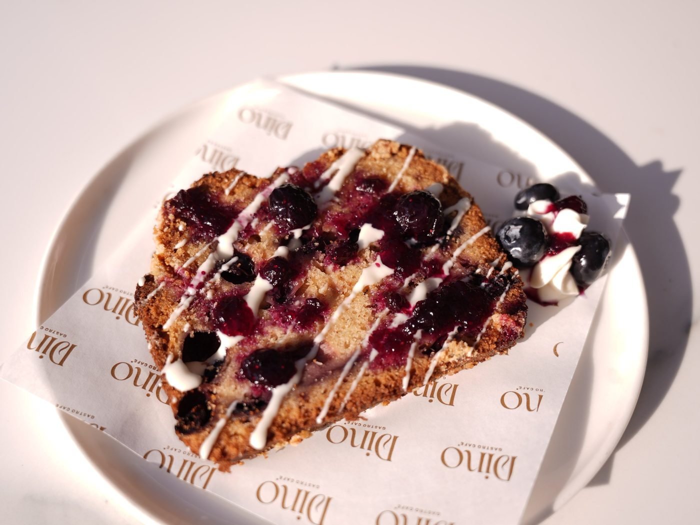
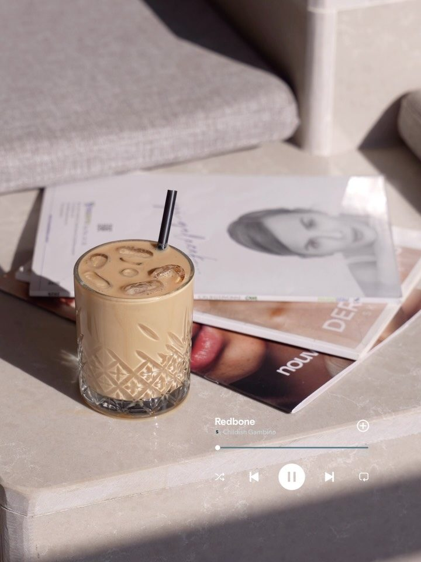
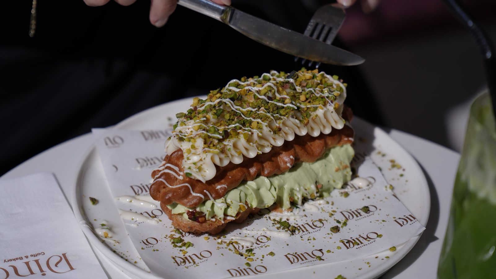
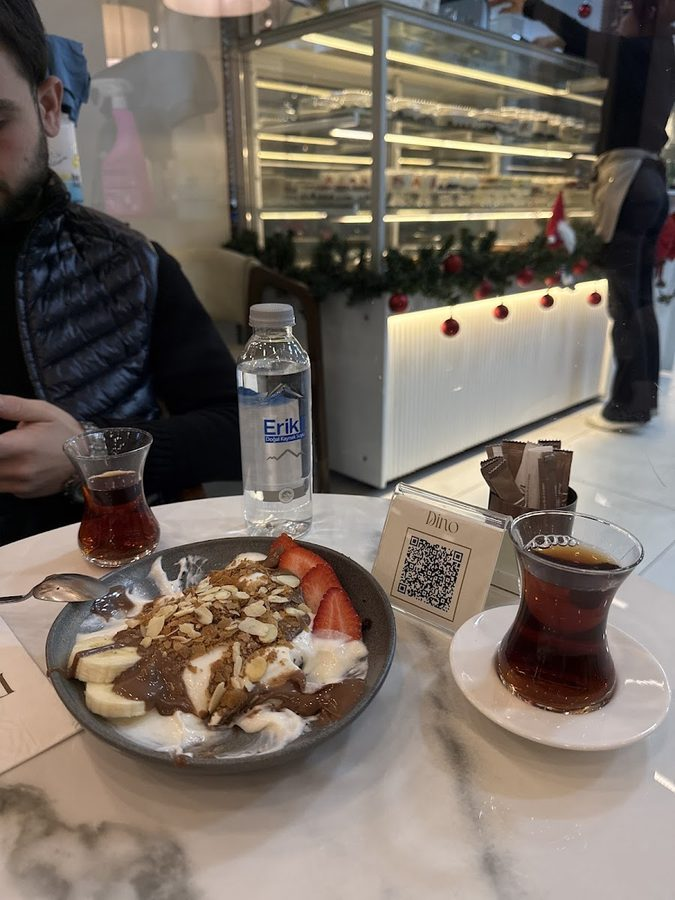

Düzce · Bankalar Sokak
Güneşin ışığıyla harmanlanmış bir lezzet hikâyesi
Espresso bar, günlük kruvasanlar ve vitrin tatlıları. Her gün sabah dokuzdan gece yarısına kadar açığız.

- Adres
- Bankalar Sk. No:4/C
Kültür Mah., Düzce - Saatler
- Her gün
09.00 – 24.00 - Telefon
- 0380 790 81 00
- @dinocoffeebakery
Vitrinden
Mekânda hazırlanır

Espresso
bar
bar




Dino Gastro Cafe
Kruvasanlar günlük, tatlılar vitrinde.
Uğrarken
Merkez, Düzce- Adres
- Kültür Mah. Bankalar Sk. No:4/C, 81000 Merkez / Düzce
Haritada aç - Saatler
- Her gün 09.00 – 24.00
- Telefon
- 0380 790 81 00
- @dinocoffeebakery
- Paket
- Yemeksepeti ve Trendyol Go üzerinden servis var.
